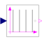

AssignClockToTriggerHoldGenerate a Boolean continuous-time trigger signal from a clocked Real input |

|
Information
This information is part of the Modelica Standard Library maintained by the Modelica Association.
This block creates a Boolean, continuous time, trigger signal whenever the clock of the input signal is active.
A particular use-case in which that block might be useful is the combination of "old-style" sampled blocks (i.e., "unclocked" discrete control functions implemented using equations between "when trigger then" clauses) with clocked blocks.
Example
The following
example
samples a sine signal with a periodic clock of 20 ms period. After that a continuous time Boolean trigger signal is generated at every clock tick of that sampled signal. The generated signal is used as trigger signal for an "old-style" TriggeredSampler block from the Modelica.Blocks.Discrete package:
 |
 |
|
| model | simulation result |
Note, that it is clearly visible in the plot that the "old-style" discrete variables have an implicit zero-order hold semantics, while the new clocked variables are only active whenever their associated clock ticks. Just compare variable sample.y (clocked) with triggeredSampler.y (unclocked) to observe the difference.
Parameters (1)
| y_start |
Value: false Type: Boolean Description: Initial value of output signal |
|---|
Connectors (2)
| u |
Type: RealInput |
|
|---|---|---|
| y |
Type: BooleanOutput Description: Connector of Boolean output signal |
Used in Examples (1)
|
Modelica.Clocked.Examples.Elementary.RealSignals Example of an AssignClockToTriggerHold block for Real signals |